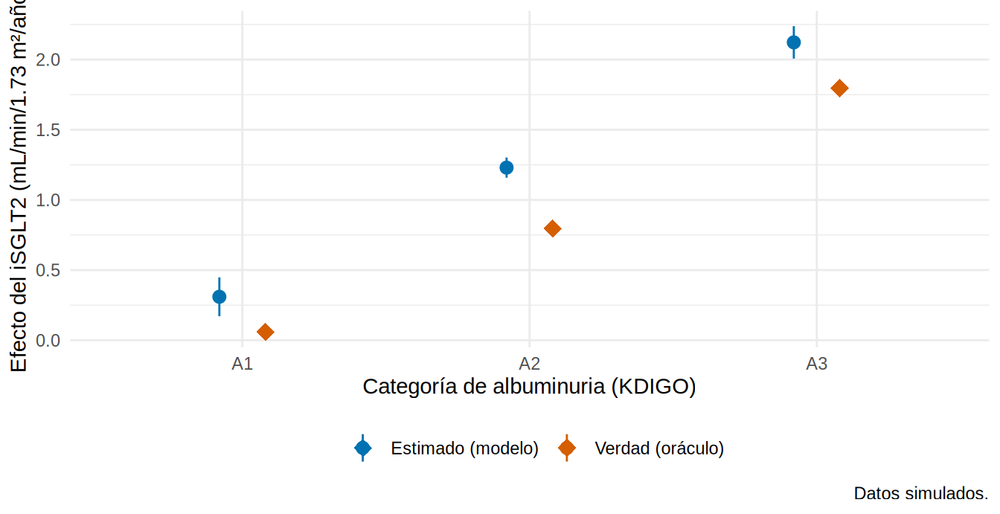

Interacción y modificación del efecto
Tres conceptos que se confunden
| Concepto | Pregunta | Qué se hace |
|---|---|---|
| Confusión | ¿Otra variable distorsiona la relación exposición-desenlace? | Se ajusta (la variable es una molestia) |
| Mediación | ¿Parte del efecto pasa por otra variable? | Se descompone (Cap. 18) |
| Modificación del efecto (interacción) | ¿El efecto cambia según el nivel de otra variable? | Se estudia (la variable es de interés) |
En el Cap. 3 vimos que el iSGLT2 beneficia más a quienes tienen más albuminuria. Eso es modificación del efecto por la albuminuria: una pregunta clínica real (“¿a quién trato con prioridad?”), no un error que haya que “corregir”.
Interacción en un modelo lineal
Para que el efecto del iSGLT2 dependa de la albuminuria, se incluye un producto entre la exposición y la variable modificadora:
\[ E[Y] = \beta_0 + \beta_1\,\text{iSGLT2} + \beta_2\,\ln(\text{UACR}) + \beta_3\,(\text{iSGLT2} \times \ln\text{UACR}) + \dots \]
El efecto del iSGLT2 es \(\beta_1 + \beta_3 \ln(\text{UACR})\): cambia con la UACR. Para que \(\beta_1\) sea interpretable se centra la UACR (restando un valor de referencia; aquí ln(UACR) = 4.8 es la UACR típica ≈ 120 mg/g).
# A tibble: 2 × 7
term estimate std.error statistic p.value conf.low conf.high
<chr> <dbl> <dbl> <dbl> <dbl> <dbl> <dbl>
1 isglt2 1.33 0.036 36.8 0 1.26 1.40
2 isglt2:I(luacr - 4.8) 0.532 0.032 16.9 0 0.47 0.593-
isglt2(≈ 1.3): el efecto del iSGLT2 cuando ln(UACR) = 4.8 (UACR ≈ 120 mg/g). -
isglt2:I(luacr - 4.8)(≈ 0.53): por cada aumento de 1 en ln(UACR), el beneficio aumenta en 0.53 mL/min/1.73 m²/año.
¿La interacción es necesaria? Se compara el modelo con y sin ella con una prueba de razón de verosimilitud o F:
Analysis of Variance Table
Model 1: pendiente_tfg ~ isglt2 + I(luacr - 4.8) + I(edad/10) + sexo +
hba1c + pas + tfg_basal + ecv
Model 2: pendiente_tfg ~ isglt2 * I(luacr - 4.8) + I(edad/10) + sexo +
hba1c + pas + tfg_basal + ecv
Res.Df RSS Df Sum of Sq F Pr(>F)
1 4991 7126.9
2 4990 6742.5 1 384.42 284.5 < 2.2e-16 ***
---
Signif. codes: 0 '***' 0.001 '**' 0.01 '*' 0.05 '.' 0.1 ' ' 1Efecto del iSGLT2 por categoría de albuminuria
En clínica interesa el efecto en cada grupo (A1, A2, A3). avg_comparisons() con by lo calcula a partir del modelo con interacción:
est <- avg_comparisons(m_int, variables = "isglt2", by = "cat_a") |>
as_tibble() |> select(cat_a, estimate, conf.low, conf.high)
verdad <- oraculo |> group_by(cat_a) |> summarise(verdadero = mean(ite), n = n())
left_join(est, verdad, by = "cat_a") |> mutate(across(where(is.numeric), \(x) round(x, 2)))# A tibble: 3 × 6
cat_a estimate conf.low conf.high verdadero n
<ord> <dbl> <dbl> <dbl> <dbl> <dbl>
1 A1 0.31 0.17 0.45 0.06 465
2 A2 1.23 1.16 1.3 0.8 3536
3 A3 2.12 2.01 2.24 1.8 999left_join(est, verdad, by = "cat_a") |>
ggplot(aes(cat_a)) +
geom_pointrange(aes(y = estimate, ymin = conf.low, ymax = conf.high, color = "Estimado (modelo)"),
position = position_nudge(x = -0.08)) +
geom_point(aes(y = verdadero, color = "Verdad (oráculo)"), shape = 18, size = 4,
position = position_nudge(x = 0.08)) +
scale_color_manual(values = c("Estimado (modelo)" = "#0072B2", "Verdad (oráculo)" = "#D55E00"), name = NULL) +
labs(x = "Categoría de albuminuria (KDIGO)", y = "Efecto del iSGLT2 (mL/min/1.73 m²/año)",
caption = "Datos simulados.") +
theme_minimal(base_size = 11) + theme(legend.position = "bottom")
El modelo recupera el patrón (casi nulo en A1, intermedio en A2, grande en A3), pero sobrestima el nivel de cada grupo en ~0.3: es la misma confusión residual por la fragilidad (8.2). La forma de la heterogeneidad se aprende bien aunque el nivel esté sesgado.
Interacción en desenlaces binarios: ¿en qué escala?
Para un desenlace binario, “interacción” depende de la escala:
- Multiplicativa: el efecto relativo (RR u OR) cambia entre estratos.
- Aditiva: el efecto absoluto (DR) cambia entre estratos.
Pueden no coincidir. Un efecto relativo constante (RR = 0.7 en todos) implica diferencias de riesgo distintas si el riesgo basal varía. Eso ocurre en nuestros datos: el HR del iSGLT2 es constante (0.70) para todos, pero el riesgo basal de evento crece con la albuminuria.
Analysis of Deviance Table
Model 1: evento ~ isglt2 + cat_a + I(edad/10) + sexo + hba1c + pas + tfg_basal +
luacr + ecv
Model 2: evento ~ isglt2 * cat_a + I(edad/10) + sexo + hba1c + pas + tfg_basal +
luacr + ecv
Resid. Df Resid. Dev Df Deviance Pr(>Chi)
1 4989 3877.2
2 4987 3876.6 2 0.59652 0.7421No hay evidencia de interacción multiplicativa (p ≈ 0.7). Pero en escala absoluta el beneficio es muy distinto:
dr_grupo <- avg_comparisons(l_int, variables = "isglt2", by = "cat_a", comparison = "difference") |>
as_tibble() |> select(cat_a, DR = estimate, DR_inf = conf.low, DR_sup = conf.high)
rr_grupo <- avg_comparisons(l_int, variables = "isglt2", by = "cat_a", comparison = "ratio") |>
as_tibble() |> select(cat_a, RR = estimate)
dr_verdad <- oraculo |> group_by(cat_a) |> summarise(DR_verdad = mean(evento_36m_1 - evento_36m_0))
left_join(dr_grupo, rr_grupo, by = "cat_a") |>
left_join(dr_verdad, by = "cat_a") |>
mutate(NNT = 1 / abs(DR), across(where(is.numeric), \(x) round(x, 3)))# A tibble: 3 × 7
cat_a DR DR_inf DR_sup RR DR_verdad NNT
<ord> <dbl> <dbl> <dbl> <dbl> <dbl> <dbl>
1 A1 -0.046 -0.084 -0.008 0.347 -0.024 21.8
2 A2 -0.073 -0.096 -0.05 0.576 -0.042 13.6
3 A3 -0.113 -0.167 -0.058 0.627 -0.066 8.87En escala relativa, la heterogeneidad es leve y poco precisa (el RR de A1 se basa en pocos pacientes y su IC es amplio; la prueba de interacción da p ≈ 0.7). En escala absoluta, la diferencia de riesgos y el NNT cambian mucho: tratar a un paciente A3 evita bastantes más eventos que tratar a uno A1. Esto es modificación del efecto en escala aditiva y es la que importa para decidir a quién tratar con recursos limitados.
Las DR estimadas están infladas respecto de la verdad (DR_verdad: −2.4, −4.2 y −6.6 puntos) por la confusión residual de siempre, pero el gradiente (más beneficio absoluto a mayor albuminuria) se conserva.
- Siempre reporta la interacción en la escala aditiva si la decisión clínica depende del beneficio absoluto (NNT, eventos evitados).
- La escala multiplicativa es la natural de los modelos logístico y de Cox y sirve para poner a prueba la interacción estadística.
- Reporta ambas (recomendación de VanderWeele): la ausencia de interacción en una escala no implica ausencia en la otra.
Interacción aditiva entre dos factores: RERI
Cuando se estudian dos factores de riesgo, la interacción aditiva se resume con el RERI (relative excess risk due to interaction):
\[ \text{RERI} = RR_{11} - RR_{10} - RR_{01} + 1 \]
Si no hay interacción aditiva, RERI = 0; RERI > 0 indica un efecto conjunto mayor que la suma de los efectos separados. Para ambos factores definidos como de riesgo, recodificamos “no recibir iSGLT2” y comparamos con la ECV previa:
oraculo <- oraculo |> mutate(sin_isglt2 = 1 - isglt2)
reri_fn <- function(datos, i = seq_len(nrow(datos))) {
m <- glm(evento ~ sin_isglt2 * ecv + I(edad / 10) + sexo + hba1c + pas + tfg_basal + luacr,
data = datos[i, ], family = poisson)
b <- coef(m)
rr10 <- exp(b["sin_isglt2"]); rr01 <- exp(b["ecv"])
rr11 <- exp(b["sin_isglt2"] + b["ecv"] + b["sin_isglt2:ecv"])
unname(rr11 - rr10 - rr01 + 1)
}
library(boot)
set.seed(8)
b_reri <- boot(oraculo, reri_fn, R = 500)
c(RERI = b_reri$t0, boot.ci(b_reri, type = "perc")$percent[4:5] |> setNames(c("IC_inf", "IC_sup"))) RERI IC_inf IC_sup
0.1353647 -0.3007817 0.5318136 Un RERI cuyo IC incluye 0 indica sin interacción aditiva detectable entre no recibir iSGLT2 y tener ECV previa. El IC del RERI no tiene una fórmula sencilla: se obtiene con el método delta o, como aquí, con bootstrap (Cap. 7.4).
Análisis de subgrupos: lo que se debe y no se debe hacer
- Comparar valores p entre subgrupos (“significativo en hombres, no en mujeres”). El método correcto es probar la interacción.
- Hacer muchos subgrupos sin plan previo: con 10 subgrupos, 40 % de probabilidad de al menos un falso positivo.
- Subgrupos sin potencia: el estudio se calculó para el efecto global, no para subgrupos; “sin efecto” puede significar “sin potencia”.
- Dicotomizar una variable continua (UACR < 300 vs. ≥ 300) pierde información; mejor interacción con la variable continua.
- Interpretar causalmente la interacción sin considerar que la variable modificadora también necesita control de confusión.
Un gráfico de bosque (forest plot) con la estimación en cada subgrupo y el p de la interacción, en la misma escala y con el efecto global arriba. Si los subgrupos no fueron planeados, etiqueta el análisis como exploratorio.
Efecto heterogéneo del tratamiento: lo que viene
Estudiar un modificador a la vez (albuminuria, sexo, edad) es el primer paso. El conjunto de métodos para estimar el efecto individual esperado con muchas variables (causal forests, meta-learners) se verá en el Cap. 19.
- Confusión = se ajusta; modificación del efecto = se estudia; mediación = se descompone.
- La interacción se modela con términos producto (centrar la variable continua).
- Para decidir a quién tratar importa la escala aditiva (DR, NNT); para pruebas, la multiplicativa. Reporta ambas.
- Un RR constante genera DR distinta si el riesgo basal varía.
- Prueba la interacción; nunca compares p entre subgrupos.
Ejercicio
- Estima la interacción entre iSGLT2 y sexo en la pendiente de TFGe. ¿Existe modificación del efecto?
- Calcula el NNT a 36 meses por categoría de albuminuria con la DR estandarizada de cada grupo. ¿En qué grupo es menor?
- Cambia
cat_aporluacr(continua) en la interacción del modelo binario. ¿Cómo cambia el efecto estimado al aumentar la UACR?